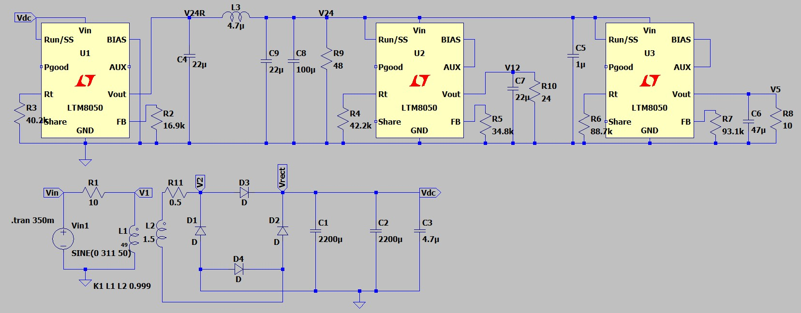
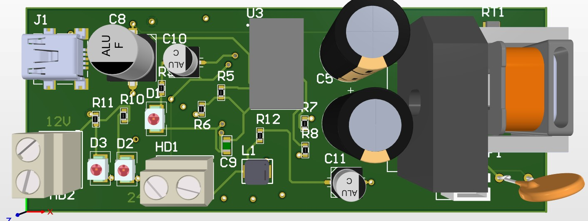
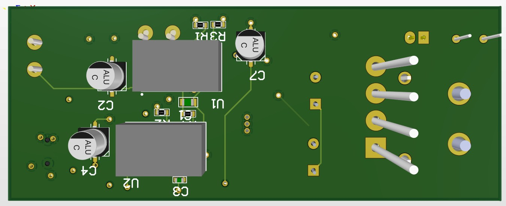

Power electronics, PCB design and industrial automation.
I design and test hardware that gets used: DC-DC power stages, motor control boards, robot communication and PLC programs. A graduate from Istanbul University-Cerrahpaşa, based in Istanbul and open to relocating internationally.
Featured project
220 VAC to 24 V / 12 V / 5 V DC Power Supply
A 30 W multi-rail supply: transformer and bridge rectifier feed three LTM8050 step-down µModule regulators, with an LC filter on the 24 V rail. I simulated it in LTspice, drew the schematic in Altium Designer and laid out the PCB.
| Input | 220 VAC, 50 Hz mains |
|---|---|
| Outputs | 24 V, 12 V, 5 V DC |
| Rated power | 30 W total |
| Regulators | 3x LTM8050 (58 V input µModule buck regulator) |
| Protection | Fuse and NTC inrush limiter on the mains input, soft-start and undervoltage lockout on the 24 V stage |
| Tools | LTspice, Altium Designer |
220 VAC -> fuse -> NTC -> transformer -> bridge rectifier -> 2x 2200 uF -> DC bus DC bus -> LTM8050 -> LC filter -> 24 V 24 V -> LTM8050 -> 12 V 24 V -> LTM8050 -> 5 V
What the simulation shows
- The DC bus charges to about 47 V, below the LTM8050's 58 V input limit.
- All three rails start cleanly within a few milliseconds and settle at 24 V, 12 V and 5 V.
- The 24 V rail was noisy until I added a 4.7 µH inductor and extra capacitance at its output. With the filter it is smooth, and the 12 V and 5 V rails fed from it are clean.
- Simulated load: 12 W on 24 V, 6 W on 12 V and 2.5 W on 5 V.





Experience
Robotics and Automation Intern, ASELSAN REHİS
Aug 2026 to Sep 2026 · Ankara- Programmed a robotic arm and set the tool centre points (TCP) for multiple tools and the payload of the robot.
- Designed a communication protocol between different platforms.
- Wrote Python for test automation, serial communication and system validation of robot and control systems.
Intern, Remora Robotics Technologies
Jun 2025 to Aug 2025- Designed PCBs in Altium Designer and developed DC-DC converters with PWM motor control.
- Built the Raspberry Pi to BLDC motor link: the Pi sent control signals over a protocol to command the motor and handled other parts of the robot.
- Debugged hardware. The work was used in the company's robot and taken to production use.
More projects
PLC programs, Mitsubishi FX5U
Programmed in GX Works3.
Ladder logic with timers, counters, data registers and analog input handling.
Residential distribution panel design
AutoCAD Electrical.
Electrical drawings for a residential distribution panel, aligned with IEC and NEC practice.
Skills
Hardware and power
Software and simulation
Industrial automation
Languages
Education
B.Sc. Electrical and Electronics Engineering
Sep 2022 to Jul 2026Istanbul University-Cerrahpaşa, Istanbul, Turkey
Contact
I'm looking for electronics, electrical and automation engineering roles, and I'm open to relocating internationally.